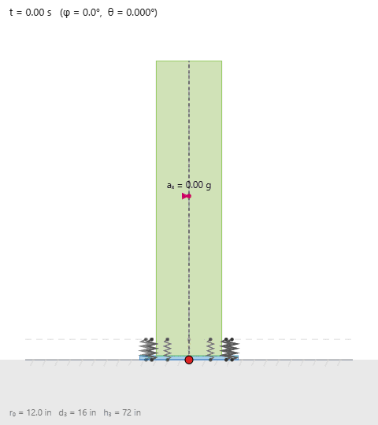

How much acceleration starts the rocking?
The onset is a balance statement: when the effective gravity line leaves the support, one reaction force reaches zero.
Mass cancels from the moment balance
Before rocking, the reaction force passes through the center of the base. Increasing the horizontal base acceleration shifts the reaction (or contact point) until it passes through the active corner.
In absence of external force P, the vertical forces are equal to W and opposite. Hence the critical acceleration (obtained by moment equilibrium) is governed by the center-of-mass geometry, not by the body’s weight.
Ramp the acceleration slowly. The first value at which the reaction reaches zero is the dynamic version of the geometric threshold. The calculation below updates live with the sliders in the figure.
Geometry predicts the first move
Changing weight changes the reaction forces but not the acceleration at onset. This threshold is the bridge from statics to the transient free response.
Does sgn(θ) follow the minimum-acceleration rule?
Drive the base with a steadily increasing ramp a(t) = rate·t and watch when the block first leaves the base. The smooth-sign dynamics lift off at the same a_min the statics predicted: before onset the block creeps imperceptibly, and once the effective gravity line leaves the base the angle takes off.
The animation magnifies θ by 100× so the first rock is visible; the dashed line marks the predicted onset a_min.
Free vibration
Once the base acceleration stops, the body moves around its active corner under gravity. It slows as it climbs, then speeds up as it falls toward the opposite corner. At each corner switch, impact removes energy from the motion.
Damping acts only while the body is in contact with the base. In the figure, the envelope C₀(1 − sgn(θ)²) is nonzero for |θ| < θ₀ and vanishes once the body is rocking.

Full experiment
Minimum Acceleration
Ramp the base acceleration with the complete solver and compare measured lift-off with the prediction.